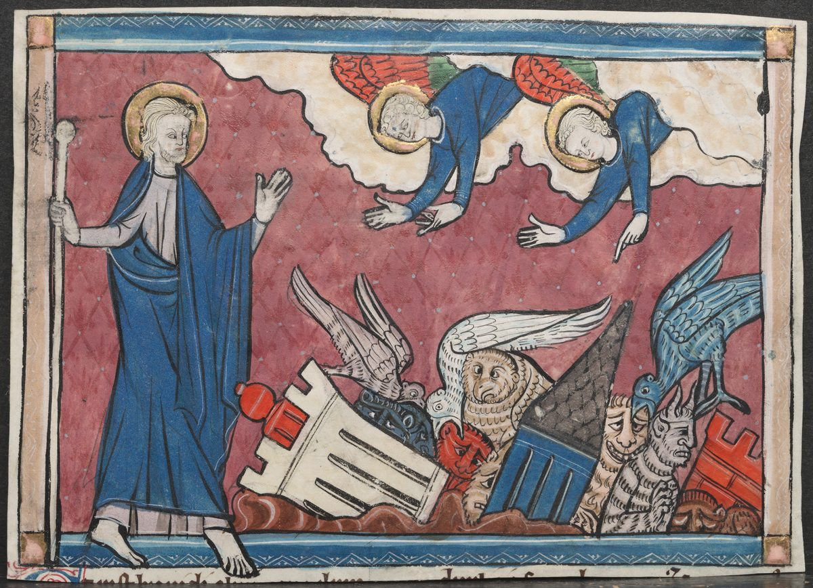

Revelation 18 — The Mister Translation

⚠ A miniature from Lorraine of verse 2, ‘Fallen, fallen is Babylon the great! And she has become a dwelling place of demons … and a prison of every unclean bird.’ The painter shows the city’s towers toppling and fills the ruin with the birds and the demons the angel names, while John watches from the side.

Translator’s Notes
“After these things I saw another angel coming down out of heaven, having great authority, and the earth was lit up by his glory.” Another angel comes down as at Revelation 10:1, “another mighty angel coming down out of heaven.” The light is Ezekiel’s, where the glory of the God of Israel came from the east “and the earth shone with his glory” (Ezekiel 43:2). “Lit up” is the verb of the new city, “the glory of God lit her up” (Revelation 21:23). The KJV reads “the earth was lightened with his glory”; the NIV reads “illuminated by his splendor”; the NWT 1984 reads “the earth was lighted up from his glory.”
⚠ “And he cried out with a mighty voice, saying, ‘Fallen, fallen is Babylon the great! And she has become a dwelling place of demons, and a prison of every unclean spirit, and a prison of every unclean bird, and a prison of every unclean and hated beast.’” The cry is the second angel’s at Revelation 14:8, and before that Isaiah’s, “Fallen, fallen is Babylon” (Isaiah 21:9); the Greek says “fell,” a past tense, though the city still stands in the chapter. Katoikētērion, “dwelling place,” stands in two verses; the other is the congregation “built together into a dwelling place of God in the Spirit” (Ephesians 2:22). “Prison” is phylakē, the word of “the devil is about to throw some of you into prison” (Revelation 2:10): a ruin where unclean things are kept, as the prophets pictured fallen Babylon left to jackals and desert creatures. The clause about the beast is in the Nestle-Aland text; Westcott-Hort, Tregelles and the Byzantine text lack it, and then “hated” goes with the bird. The KJV reads “the hold of every foul spirit, and a cage of every unclean and hateful bird”; the NIV has the clause, “a haunt for every unclean and detestable animal”; the NWT 1984 reads “a lurking place of every unclean exhalation,” where the KJV, ASV, NIV, Geneva and Douay all have “spirit,” and the 2013 revision of the NWT reads “every unclean spirit.”
⚠ “Because all the nations have fallen by the wine of the fury of her sexual immorality, and the kings of the earth committed sexual immorality with her, and the merchants of the earth grew rich from the power of her luxury.” Westcott-Hort, Tregelles and the Byzantine text read peptōkan, “have fallen,” printed here; the Nestle-Aland text reads pepōkan, “have drunk,” one letter shorter. “The wine of the fury of her sexual immorality” is the phrase of Revelation 14:8. Emporos, “merchant,” stands in five verses: four in this chapter, and the merchant of the parable “seeking fine pearls” (Matthew 13:45), where pearls are bought with everything a man has; here they are cargo (v12). “Luxury” is strēnos, with its verb “lived in luxury” in verses 7 and 9, a word for luxury that runs to arrogance; a compound of it stands at 1 Timothy 5:11. The KJV reads “all nations have drunk of the wine of the wrath of her fornication … the abundance of her delicacies”; the ASV reads “all the nations are fallen … the power of her wantonness”; the NWT 1984 reads “all the nations have fallen [victim] … her shameless luxury.”
“And I heard another voice out of heaven, saying, ‘Come out of her, my people, so that you do not share in her sins, and so that you do not receive any of her plagues.’” The summons is Jeremiah’s to the exiles in Babylon, “Go out of her midst, my people” (Jeremiah 51:45), and Paul’s, quoting Isaiah, “come out from among them and separate yourselves” (2 Corinthians 6:17). “Share in” is synkoinōneō, as in “do not take part in the fruitless works of darkness” (Ephesians 5:11); John called himself a “companion” of his readers with the noun at Revelation 1:9. Tregelles and the Byzantine text put “out of her” before “my people,” and the Byzantine text has a singular, “Come out.” The KJV reads “Come out of her, my people, that ye be not partakers of her sins”; the ASV reads “Come forth, my people, out of her, that ye have no fellowship with her sins”; the NWT 1984 reads “Get out of her, my people, if YOU do not want to share with her in her sins.”
“For her sins have been heaped up to heaven, and God has remembered her unjust deeds.” “Heaped up” is kollaō, “to glue, to join”: the sins are stuck together into one mass reaching the sky, and it is the verb of “the one who joins himself to a prostitute” (1 Corinthians 6:16). Jeremiah said of Babylon, “her judgment has reached to the heavens” (Jeremiah 51:9). “Remembered” answers “Babylon the great was remembered before God” (Revelation 16:19). Adikēma, “unjust deed,” stands in three verses; at Acts 18:14 Gallio uses it for “some wrong” worth a court’s time. The NIV reads “her sins are piled up to heaven”; the NWT 1984 reads “her sins have massed together clear up to heaven”; the KJV reads “her sins have reached unto heaven.”
⚠ “Pay her back as she herself paid, and double the double for her according to her works; in the cup in which she mixed, mix her double.” The law of the prophets against Babylon, “as she has done, do to her” (Jeremiah 50:15, 29). The voice does not say whom it commands; some read the agents of judgment, the beast and the horns of 17:16, others the angels, and readings differ. “Double the double” keeps the Greek’s doubled word; Jerusalem too received “double for all her sins” (Isaiah 40:2). Some readers take “double” as “twice as much,” others as “a matching equal,” a full measure; readings differ. The cup she mixed is her golden cup (17:4), and “mix” is the verb of God’s cup of wrath, “mixed unmixed” (14:10). The Byzantine text adds “for her” after the first “double.” The KJV reads “Reward her even as she rewarded you,” with a “you” that none of the four editions prints; the ASV reads “double unto her the double according to her works”; the NWT 1984 reads “do to her twice as much, yes, twice the number of the things she did.”
⚠ “As much as she glorified herself and lived in luxury, so much torment and mourning give her. For in her heart she says, ‘I sit a queen, and I am not a widow, and I will never see mourning.’ Therefore in one day her plagues will come, death and mourning and famine, and she will be burned up with fire; for mighty is Jehovah God who judged her.” The boast is Babylon’s in Isaiah, “I shall not sit as a widow, nor know the loss of children,” and the answer too, “these two things shall come to you in a moment, in one day” (Isaiah 47:8–9); Laodicea said the same in its own words, “I am rich … and need nothing” (Revelation 3:17). Penthos, “mourning,” stands in four verses: three here, and the promise that “neither will there be mourning” (Revelation 21:4), with James 4:9. Basanismos, “torment,” stands in five verses, all in Revelation, the scorpion torment of 9:5 among them. “Jehovah God” renders kyrios ho theos, the Greek reading kyrios; Jeremiah says of Babylon’s captives, “Their Redeemer is strong; Jehovah of hosts is his name” (Jeremiah 50:34). “Judged” is a past tense: the verdict is already given. The ASV reads “I sit a queen, and am no widow, and shall in no wise see mourning” and “the Lord God who judged her”; the NWT 1984 reads “Jehovah God, who judged her, is strong”; the NIV reads “I sit enthroned as queen.”
“And the kings of the earth who committed sexual immorality and lived in luxury with her will weep and beat their breasts over her when they see the smoke of her burning.” Three laments follow, of kings, merchants and seafarers, built on Ezekiel’s lament over Tyre, where the princes of the sea come down from their thrones (Ezekiel 26:16), the merchants are listed with their wares (27:12–24) and the sailors wail (27:29–32; all yet to come in this translation). “Beat their breasts over her” is the phrase of Revelation 1:7, “all the tribes of the earth will beat their breasts over him.” Pyrōsis, “burning,” stands in three verses: here, verse 18, and “the burning among you” that tests the faithful at 1 Peter 4:12 (dictionary). The KJV reads “shall bewail her, and lament for her”; the ASV reads “shall weep and wail over her”; the NWT 1984 reads “will weep and beat themselves in grief over her.”
“Standing far off for fear of her torment, saying, ‘Woe, woe, the great city, Babylon the mighty city, for in one hour your judgment has come!’” They stand far off; none comes near to help. “Woe, woe” is the eagle’s cry doubled, where the eagle cried it three times (Revelation 8:13). “One hour” is the hour the ten kings reigned with the beast (17:12), and it comes back in verses 17 and 19. The ASV reads “Woe, woe, the great city, Babylon, the strong city!”; the NWT 1984 reads “Too bad, too bad, you great city”; the NIV reads “In one hour your doom has come!”
“And the merchants of the earth weep and mourn over her, because no one buys their cargo anymore.” Under the beast “no one may buy or sell” without the mark (Revelation 13:17); now no one buys at all. Gomos, “cargo,” stands in three verses: here, verse 12, and the ship that was to unload its cargo at Tyre (Acts 21:3). The Byzantine text has a future, “will weep and mourn.” The KJV reads “shall weep and mourn over her; for no man buyeth their merchandise any more”; the NWT 1984 reads “there is no one to buy their full stock anymore”; the NIV reads “no one buys their cargoes anymore.”
“Cargo of gold and silver and precious stone and pearls, and of fine linen and purple and silk and scarlet, and every kind of citron wood, and every object of ivory, and every object of most precious wood and of bronze and iron and marble, and cinnamon and spice and incense and perfumed oil and frankincense, and wine and olive oil and fine flour and wheat, and cattle and sheep.” The list runs from metals and jewels to cloth, rare woods, spices, food and livestock, the way Ezekiel lists the wares of Tyre’s trading partners (Ezekiel 27:12–24). Several of its words stand nowhere else in the New Testament: thyinos, “citron wood,” a fragrant North African wood; sērikos, “silk,” named for the Seres, the silk people of the far East; amomon, an aromatic spice plant; and rēdē, “carriage,” a word borrowed from the Latin raeda. “Perfumed oil” is myron, the oil the woman poured on Jesus’ feet (Luke 7:38). The Byzantine text lacks “and spice” and reads “sheep and cattle.” The KJV reads “all thyine wood, and all manner vessels of ivory”; the NIV reads “every sort of citron wood”; the NWT 1984 reads “everything in scented wood … and Indian spice.”
⚠ “…and of horses and of carriages and of bodies, and human souls.” “Bodies,” sōmata, was a common Greek trade word for slaves, counted like livestock. Then the grammar breaks: horses, carriages and bodies are still “cargo of,” but “souls of human beings” stands on its own, as the last item, outside the sentence of goods. The words are Ezekiel’s, whose traders paid for Tyre’s wares “with the souls of men and vessels of bronze” (Ezekiel 27:13). Some read the last phrase as the same slaves named a second time, as persons; others as more than slaves, the lives the city consumed; readings differ. The ASV reads “and merchandise of horses and chariots and slaves; and souls of men”; the NWT 1984 reads “and slaves and human souls”; the NIV reads “and human beings sold as slaves.”
“And the ripe fruit your soul longed for has gone from you, and all the rich and splendid things have perished from you, and they will never find them again.” The voice turns to speak to the city herself. Opōra, “ripe fruit,” the late-summer harvest, stands only here. “Perished” is the verb of apōleia, the destruction the beast goes to (17:8; dictionary). “They will never find them” has no subject: people in general. The Byzantine text reads “you will never find them”; Tregelles lacks “never again.” The KJV reads “thou shalt find them no more at all”; the ASV reads “men shall find them no more at all”; the NWT 1984 reads “never again will people find them.”
“The merchants of these things, who grew rich from her, will stand far off for fear of her torment, weeping and mourning, saying, ‘Woe, woe, the great city, clothed in fine linen and purple and scarlet, and gilded with gold and precious stone and pearl.’” The city is dressed as the woman was, “clothed in purple and scarlet, and gilded with gold and precious stone and pearls” (Revelation 17:4): the woman is the city (17:18). Here she wears fine linen as well, the cloth the bride is given at 19:8. Westcott-Hort and the Nestle-Aland text read “gilded in gold”; the Byzantine text reads “pearls.” The ASV reads “decked with gold and precious stone and pearl”; the Douay reads “was gilt with gold, and precious stones, and pearls”; the NWT 1984 reads “richly adorned with gold ornament.”
“For in one hour such great wealth has been made desolate!’ And every pilot, and everyone who sails anywhere, and sailors, and all who work the sea, stood far off.” “Made desolate” is the verb of the beast and the horns, who “will make her desolate” (Revelation 17:16), from the same root as the “wilderness” where John first saw her (17:3). “Pilot” is kybernētēs, the helmsman of Paul’s ship (Acts 27:11). “Everyone who sails anywhere” renders a hard phrase, “who sails to a place,” perhaps the coasting traders. The KJV reads “all the company in ships,” a reading none of the four editions prints; the ASV reads “as many as gain their living by sea”; the NWT 1984 reads “every man that voyages anywhere.”
“And cried out as they saw the smoke of her burning, saying, ‘What city is like the great city?’ And they threw dust on their heads and cried out, weeping and mourning, saying, ‘Woe, woe, the great city, in which all who had ships at sea grew rich from her costliness, for in one hour she has been made desolate!’” “What city is like …?” answers the world’s question about the beast, “Who is like the beast?” (Revelation 13:4), and repeats the sailors over Tyre, who “cast dust on their heads” and asked “Who was like Tyre?” (Ezekiel 27:30, 32). “Costliness” is timiotēs, only here. Westcott-Hort reads “cried out” both times; the other three editions read “kept crying out.” The KJV reads “What city is like unto this great city!”; the NIV reads “Was there ever a city like this great city?”; the Douay reads “seeing the place of her burning.”
⚠ “Be glad over her, O heaven, and you holy ones and apostles and prophets, for God has judged your judgment on her.” “Be glad” is the call of Revelation 12:12, “be glad, you heavens,” when the dragon was thrown down, and of Jeremiah, “heaven and earth … shall sing for joy over Babylon” (Jeremiah 51:48); the Song of Moses says “Sing for joy, you nations … for he will avenge the blood of his servants” (Deuteronomy 32:43). It answers the souls under the altar, “How long … will you not judge and avenge our blood?” (Revelation 6:10). “Judged your judgment” keeps the Greek’s cognate. Some read it as God deciding your case against her, the verdict you were owed; others as God turning on her the sentence she passed on you, as verse 6 asked; readings differ. The ASV reads “God hath judged your judgment on her”; the KJV reads “ye holy apostles and prophets; for God hath avenged you on her”; the NIV reads “God has judged her with the judgment she imposed on you”; the NWT 1984 reads “God has judicially exacted punishment for YOU from her!”
“And a mighty angel lifted a stone like a great millstone and threw it into the sea, saying, ‘So with violence will Babylon the great city be thrown down, and will never be found again.’” The act is Jeremiah’s: Seraiah was to tie a stone to the scroll of Babylon’s doom, throw it into the Euphrates and say, “Thus shall Babylon sink, and shall not rise” (Jeremiah 51:63–64). The mighty angel is the book’s third, after 5:2 and 10:1. A millstone thrown into the sea is also in Jesus’ saying, better a millstone hung around the neck and the sea (Matthew 18:6; Mark 9:42; Luke 17:2). Hormēma, “violence,” a headlong rush, stands only here; “never be found” recalls the mountains that “were not found” (16:20). Tregelles and the Byzantine text read “a millstone” for “like a millstone.” The KJV reads “Thus with violence shall that great city Babylon be thrown down”; the ASV reads “Thus with a mighty fall”; the NWT 1984 reads “Thus with a swift pitch.”
“And the sound of harpists and musicians and flute players and trumpeters will never be heard in you again, and no craftsman of any craft will ever be found in you again, and the sound of a millstone will never be heard in you again, and the light of a lamp will never shine in you again, and the voice of bridegroom and bride will never be heard in you again.” “Never … again” tolls six times in verses 21–23. Four of the things silenced are Jeremiah’s, “the voice of the bridegroom and the voice of the bride, the sound of the millstones and the light of the lamp” (Jeremiah 25:10). “Harpists” is kitharōdoi, the word for the sound John heard in heaven, “harpists harping on their harps” (Revelation 14:2): heaven keeps its music. Technītēs, “craftsman,” stands in four verses, among them the city Abraham waited for, “whose craftsman and maker is God” (Hebrews 11:10), and Demetrius’ craftsmen at Ephesus (Acts 19:24). The bridegroom and bride fall silent here, and the bride of the Lamb is still to come (Revelation 21:9). The NWT 1984 reads “the sound of singers who accompany themselves on the harp”; the NIV reads “No worker of any trade”; the KJV reads “the light of a candle shall shine no more at all in thee.”
⚠ “For your merchants were the great ones of the earth, for by your sorcery all the nations were deceived. And in her was found the blood of prophets and of holy ones and of all who have been slain on the earth.” Two reasons are given. The merchants were “the great ones,” megistanes, who hid among the rocks at Revelation 6:15 and sat at Herod’s table as his “nobles” (Mark 6:21); Isaiah called Tyre the city “whose merchants are princes” (Isaiah 23:8). “Sorcery” is pharmakeia (dictionary), which stands in two verses, here and among the works of the flesh at Galatians 5:20; Isaiah taunts Babylon with “the multitude of your sorceries” (Isaiah 47:9, 12). “Deceived” is the dragon’s verb (Revelation 12:9). Then the voice speaks of her, not to her, and widens the blood: prophets and holy ones, as at 16:6 and 17:6, and “all who have been slain on the earth.” Jeremiah said “at Babylon shall fall the slain of all the earth” (Jeremiah 51:49), and Jesus laid on Jerusalem “all the righteous blood poured out on the earth” (Matthew 23:35). “Slain” is the word of the Lamb “standing as though slain” (5:6) and of the souls under the altar (6:9). The Byzantine text reads “bloods.” The KJV reads “for by thy sorceries were all nations deceived”; the ASV reads “for thy merchants were the princes of the earth”; the NWT 1984 reads “for by your spiritistic practice all the nations were misled.”
Patterns worth carrying forward
What this chapter answers. Chapter 17 showed Babylon and ended with the beast and the horns burning her; chapter 18 tells her fall, but never shows it. An angel announces it as already done; a voice calls God’s people out of her before it happens; kings, merchants and seafarers watch the smoke from a distance and lament what they have lost; and a mighty angel throws a millstone into the sea. The chapter is built from the prophets’ words against Babylon and Tyre, Isaiah’s, Jeremiah’s and Ezekiel’s, and ends on the blood found in her.
Where this translation keeps the exact words: “Fallen, fallen”; “a dwelling place,” as at Ephesians 2:22, and “a prison”; “have fallen by the wine,” with the other reading in the note; “Come out of her, my people”; “double the double”; “I sit a queen”; “mighty is Jehovah God who judged her”; “beat their breasts over her,” as at 1:7; “in one hour”; “cargo”; “of bodies, and human souls”; “made desolate”; “What city is like the great city?”; “judged your judgment”; “millstone”; “craftsman”; “sorcery”; and “slain,” as of the Lamb at 5:6.
Echoes paid. “Fallen, fallen is Babylon the great” of Revelation 14:8, her fall told at last, as promised at the close of Revelation 17; Babylon remembered before God at Revelation 16:19; the burning of Revelation 17:16; the one hour of Revelation 17:12; the woman’s purple and scarlet, gold, stone and pearls of Revelation 17:4; no one to buy, after Revelation 13:17; “Who is like the beast?” of Revelation 13:4; the souls’ cry to avenge our blood of Revelation 6:10; “be glad, you heavens” of Revelation 12:12; and the mighty angel of Revelation 5:2 and 10:1.
Echoes planted. Heaven’s “Hallelujah” over the judgment of the great prostitute, whose smoke goes up forever and ever; the marriage of the Lamb, and his bride given fine linen, bright and pure; and the rider whose robe reads “King of kings and Lord of lords” (all in chapter 19).
Next in this book: Revelation 19. A great multitude in heaven cries “Hallelujah” over the judgment of the great prostitute; the marriage of the Lamb has come, and his bride is clothed in fine linen; heaven opens on a rider on a white horse, called Faithful and True, with “King of kings and Lord of lords” on his robe; and the beast and the false prophet are thrown alive into the lake of fire.